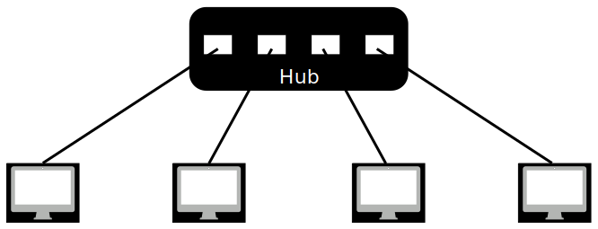
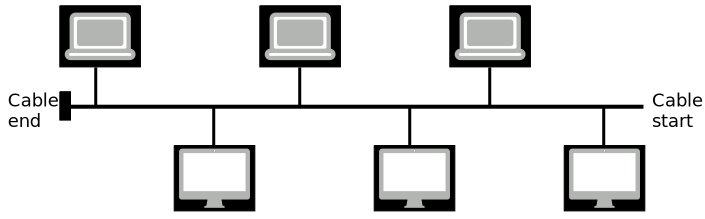
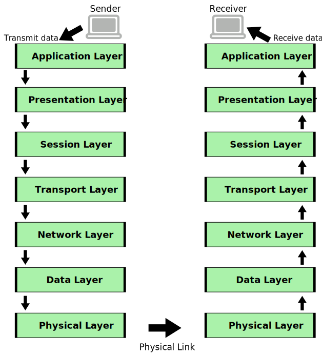

Basics of Computer Networks
- Definition : A computer network is a set of interconnected computers and other devices that are
linked together to share resources, data, and information. The connections can be wired or wireless and
enable communication and collaboration between the connected devices.
Goals of Computer Network:
- Resource Sharing: Networks allow multiple users to share hardware, software, and data
resources,
reducing costs and increasing efficiency.
- Communication: Networks facilitate data exchange and communication between users,
applications,
and
devices.
- Collaboration: Networks enable users to work together on shared projects and documents,
promoting
teamwork and productivity.
- Data Transfer: Networks provide a means to transfer data and information between devices
quickly
and
efficiently.
Applications of Computer Network:
- File Sharing: Networks enable users to access and share files and documents over shared
drives or
cloud-based storage.
- Communication: Networks support email, instant messaging, video conferencing, and other
communication applications.
- Internet Access: Networks provide connectivity to the internet, allowing users to browse the
web
and
access online services.
- Printing: Networked printers enable multiple users to print from their devices to a
centralized
printer.
- Remote Access: Networks allow users to remotely access resources and systems from different
locations.
- Online Gaming: Networks facilitate multiplayer gaming experiences over the internet.
- E-commerce: Networks support online shopping and electronic transactions.
Components of a Computer Network:
- Nodes: Devices such as computers, servers, printers, routers, and switches that are part of
the
network.
- Links: Physical or wireless connections that allow data transmission between nodes.
- Network Interface Card (NIC): Hardware that enables a device to connect to the network and
communicate using network protocols.
- Switches: Devices that connect multiple nodes in a local network and facilitate data
forwarding.
- Routers: Devices that connect multiple networks and enable data routing between them.
- Cables and Transmission Media: Physical medium used to carry data signals between devices
(e.g.,
twisted-pair cables, fiber-optic cables).
- Protocols: Rules and conventions that govern data transmission and communication within the
network.
Physical Network Topology and Types:
The term physical topology refers to the way in which a network is laid out physically: I/O or more
devices connect to a link; two or more links form a topology.
There are four basic topologies possible: mesh, star, bus, and ring. And combining these we get hybrid.
Mesh Topology
In a mesh topology, every device has a dedicated point-to-point link to every other device. The term
"dedicated" means that the link carries traffic only between the two devices it connects.
Node 1 must be connected to n - 1 nodes, node 2 must be connected to n – 1 nodes, and finally, node n
must be connected to n - 1 nodes. We need n (n - 1) physical links.
However, if each physical link allows communication in both directions, the number of links needed is
n(n-1)/2.

Advantages
- The use of dedicated links guarantees that each connection can carry its own data load, thus
eliminating the traffic problems that can occur when links must be shared by multiple devices.
- A mesh topology is robust. If one link becomes unusable, it does not incapacitate the entire
system.
- There is the advantage of privacy or security. When every message travels along a dedicated
line, only the intended recipient sees it.
- Point-to-point links make fault identification and fault isolation easy.
Disadvantages
- Amount of cabling and the number of I/O ports required.
- The sheer bulk of the wiring can be greater than the available space (in walls, ceilings, or
floors) can accommodate.
- The hardware required to connect each link (I/O ports and cable) can be prohibitively expensive.
Star Topology
In a star topology, each device has a dedicated point-to-point link only to a central controller,
usually called a hub.
The devices are not directly linked to one another. Unlike a mesh topology, a star topology does not
allow direct traffic between devices. The controller acts as an exchange: If one device wants to
send data to another, it sends the data to the controller, which then relays the data to the other
connected device.

Advantages
- A star topology is less expensive than a mesh topology.
- In a star, each device needs only one link and one I/O port to connect it to any number of
others. This factor also makes it easy to install and reconfigure.
- Far less cabling needs to be housed, and additions, moves, and deletions involve only one
connection: between that device and the hub.
- Other advantages include robustness. If one link fails, only that link is affected. All other
links remain active.
Disadvantages
- The dependency of the whole topology on one single point, the hub. If the hub goes down, the
whole system is inoperative.
- Although a star requires far less cable than a mesh, each node must be linked to a central hub.
Bus Topology
In a bus topology, the preceding examples all describe point-to-point connections. However, a bus
topology, on the other hand, is multipoint, where one long cable acts as a backbone to link all the
devices in a network.
As a signal travels along the backbone, some of its energy is transformed into heat. Consequently, it
becomes weaker and weaker as it travels farther and farther along the cable.

Advantages
- Bus topology offers ease of installation, making it a convenient choice for network setups.
- A bus topology uses less cabling compared to mesh or star topologies, resulting in cost savings
and simplified network infrastructure.
Disadvantages
- Reconnecting devices and fault isolation in a bus topology can be challenging when issues arise,
potentially leading to network downtime.
- A single fault or break in the bus cable can disrupt all data transmission, even between devices
located on the same side of the problem, affecting overall network reliability.
Ring Topology
In a ring topology, each device has a dedicated point-to-point connection with only the two devices
on either side of it. A signal is passed along the ring in one direction, from device to device,
until it reaches its destination.
Advantages
- A ring topology is relatively easy to install and reconfigure, making it a flexible choice for
network setups. Fault isolation is simplified, making it easier to identify and resolve network
issues.
Disadvantages
- Unidirectional traffic can be a disadvantage in a ring topology, as data can only travel in one
direction around the ring. This limitation can impact network efficiency.
- In a simple ring topology, a break in the ring, such as a disabled station or a cable fault, can
disable the entire network. This lack of redundancy can make the network vulnerable to
disruptions.
Hybrid Topology
A hybrid topology combines different network topologies within a single network infrastructure. For
example, a hybrid network can consist of a primary star topology with each branch connecting several
stations in a bus topology.
Advantages
- Hybrid topologies offer greater flexibility in designing and customizing a network to meet
specific requirements. They can leverage the strengths of different topologies to optimize
network performance.
- By combining topologies, fault tolerance and redundancy can be enhanced. If one part of the
network fails, it may not affect the entire system, improving overall network reliability.
- Hybrid topologies can provide scalability, allowing the network to grow and adapt to changing
needs without requiring a complete overhaul.
Disadvantages
- Designing and managing a hybrid network can be complex and may require more extensive planning
and maintenance compared to single-topology networks.
- The cost of implementing and maintaining a hybrid network can be higher due to the need for
different hardware and configurations to support multiple topologies.
- Network troubleshooting and fault isolation may be more challenging in a hybrid topology, as
issues can arise from different interconnected topologies.
Connecting Networks: Broadcast and Point-to-Point
After understanding topologies, we delve into different types of network connections.
Broadcast Network
In a broadcast network, all devices share the same communication medium and can send their messages
to all other devices on the network. It's like broadcasting a message to everyone.
- Efficient for broadcasting information to all devices simultaneously.
- Prone to congestion as all devices compete for the same channel.
- Security concerns arise as all devices receive all messages.
Point-to-Point Network
In a point-to-point network, devices have dedicated communication links. This type of connection is
often seen in a more traditional client-server architecture.
- Offers direct, dedicated communication between devices.
- Enhanced security since only intended recipients receive messages.
- Requires more connections as the network expands.
- Less efficient for broadcasting messages to all devices.
Understanding network topologies aids in deciding which connection type is suitable for different
scenarios.
Types of Networks:
Types of Networks
- LAN (Local Area Network): A network confined to a small geographical area like
a single building or campus.
- MAN (Metropolitan Area Network): A larger network that spans across a city or
metropolitan area.
- WAN (Wide Area Network): Covers larger distances, often connecting multiple
cities or countries.
- Internet: A global network of networks that enables worldwide communication and
access to information.
LAN (Local Area Network)
Advantages:
- High data transfer rates, suitable for resource-intensive applications.
- Having high data transfer rates is like having a super-fast highway for information. It
means that data can zoom from one point to another really quickly. This is especially
useful for "resource-intensive applications," which are like power-hungry superheroes of
the computer world. These applications, such as fancy video editing or intricate 3D
graphics, need a lot of computer muscle to do their jobs well. So, when a network boasts
high data transfer rates, it's like giving these power-hungry applications the speedway
they need to zip through their tasks without slowing down. It's like having a speedy
express lane for data, making sure everything runs smoothly for the most demanding jobs
in the digital world.
- Low implementation cost as it covers a limited area.
- Since LANs are designed to connect devices within a confined space, such as a single
building, campus, or office floor, the infrastructure required for deployment is
relatively contained. This focused coverage allows organizations to establish a network
environment without incurring the high costs associated with extensive cabling,
networking equipment, and other infrastructure elements needed for larger-scale
networks. As a result, LANs provide a cost-effective solution for facilitating seamless
communication and resource sharing among connected devices within the specified local
area.
- Easy to manage and troubleshoot due to smaller scale.
- Since it operates on a smaller scale, a notable advantage of this system is its ease of
management and troubleshooting. With fewer devices and components to oversee,
administrators can more efficiently handle network tasks, monitor performance, and
swiftly address any issues that may arise. The reduced complexity associated with a
smaller network makes it inherently more manageable, allowing for streamlined operations
and a quicker response to potential challenges. This simplicity contributes to a
user-friendly environment, where administrators can easily navigate and maintain the
network infrastructure, ensuring optimal functionality and minimizing downtime.
Disadvantages:
- Limited coverage area, not suitable for connecting distant locations.
- Since it has a limited coverage area, a notable constraint of this system is its
unsuitability for connecting distant locations. The inherent design of this network
restricts its reach to a confined geographic area, such as a building or campus, making
it less practical for interconnecting devices across considerable distances. While the
system excels in providing localized connectivity, its limitation in terms of coverage
renders it less effective for scenarios requiring networking capabilities over extended
or remote locations. Organizations seeking to establish connections between
geographically distant sites may find alternative network solutions more appropriate for
meeting their broader connectivity needs.
- Expensive to expand beyond its initial range.
- Since expanding beyond its initial range incurs high costs, a significant drawback of
this system is its expense when attempting to broaden coverage. The initial deployment
of this network may be cost-effective for its intended range, but scaling it to cover a
larger area can become financially burdensome. The need for additional infrastructure,
such as additional networking equipment, cabling, and other resources, contributes to
the increased expenses associated with expansion. As organizations strive to extend
network coverage to accommodate growing needs or reach new locations, the financial
implications of scaling up this system may necessitate careful consideration of budget
constraints and alternative solutions for cost-effective network expansion.
MAN (Metropolitan Area Network)
Advantages:
- Larger coverage area than LAN.
- One of the notable advantages of this system, is its extended coverage. Operating within
the scope of a metropolitan region,
such as a city or large campus, a MAN provides a broader network footprint. This
expanded coverage allows for connectivity across a more extensive geographical area,
facilitating communication and resource sharing for organizations with dispersed
locations within the metropolitan vicinity. While a MAN surpasses the confined coverage
of LANs, it still retains a regional focus, striking a balance between the localized
nature of LANs and the extensive reach of Wide Area Networks (WANs).
- Offers higher data rates than WAN.
- Another notable advantages of this system, is its enhanced data transfer capabilities.
Operating within the intermediate
scale between local and wide-reaching networks, a MAN offers faster data rates that
surpass those typically achievable in larger-scale WANs. This increased speed in data
transmission makes a MAN well-suited for applications that demand more robust and
efficient connectivity within a metropolitan area. By delivering accelerated data rates,
a MAN addresses the need for swift and reliable communication over a broader regional
scope, catering to the connectivity requirements of organizations with distributed
locations across a city or large campus.
Disadvantages:
- Installation and maintenance costs.
- A significant drawback of
this system, lies in the financial
investments required. The infrastructure necessary for deploying and maintaining a MAN
across a metropolitan area, including the installation of networking equipment, cabling,
and ongoing maintenance procedures, contributes to elevated costs. Unlike Local Area
Networks (LANs), which operate within a confined space, a MAN's intermediate scale
introduces complexities that can
escalate the initial setup expenses and the long-term maintenance overhead.
Organizations considering the implementation of a MAN must carefully weigh the cost
implications against the network's intended benefits and operational requirements.
- Not as widely available as LANs.
- It is not as widely available as Local Area Networks (LANs), a notable limitation
of this system, lies in its comparatively narrower
availability. While LANs are commonly found in various settings such as homes, offices,
and institutions, MANs are less prevalent due to their specific geographic focus on
metropolitan areas. The infrastructure requirements and scale of a MAN make its
deployment less ubiquitous, limiting its accessibility compared to the more widespread
usage of LANs. Organizations seeking network solutions should consider the availability
factor, understanding that MANs may not be as readily accessible in all locations as the
more pervasive LAN technology.
WAN (Wide Area Network)
Advantages:
- Global coverage, connects remote locations.
- It offers global coverage and connects remote locations, one of the significant
advantages of this system, lies in its expansive
reach. Unlike Local Area Networks (LANs) and Metropolitan Area Networks (MANs), which
operate within confined areas, a WAN spans across large geographical distances,
facilitating connectivity between distant locations worldwide. This global coverage
enables organizations with dispersed offices, branches, or facilities to establish
seamless communication and data exchange. By connecting remote locations, a WAN plays a
crucial role in fostering collaboration and resource sharing on a global scale, making
it an essential networking solution for businesses and enterprises with a presence
across different regions.
- Facilitates data sharing over long distances.
- It facilitates data sharing over long distances, one of the notable advantages of
this system, lies in its ability to overcome
geographic barriers. Unlike Local Area Networks (LANs) and Metropolitan Area Networks
(MANs), which operate within confined areas, a WAN excels at extending connectivity over
extensive distances. This capability enables seamless data sharing and communication
between geographically dispersed locations. Whether for multinational corporations with
offices across the globe or for individuals collaborating from different regions, a WAN
serves as a vital platform for efficient and reliable data exchange, fostering
collaboration and information flow across vast distances.
Disadvantages:
- Higher costs due to long-distance infrastructure.
- It involves higher costs attributed to long-distance infrastructure, a significant
disadvantage of this system, lies in the financial
implications associated with its extensive reach. The infrastructure required to
establish and maintain connectivity over long distances, including the deployment of
networking equipment, cabling, and other resources, contributes to elevated costs.
Unlike Local Area Networks (LANs) and Metropolitan Area Networks (MANs), which operate
within more confined spaces, the scale of a WAN introduces complexities that can
escalate both the initial setup expenses and ongoing maintenance overhead. Organizations
considering the implementation of a WAN must carefully assess and manage the associated
higher costs against the network's intended benefits and operational requirements."
- Slower data transfer rates compared to LAN.
- It entails slower data transfer rates compared to Local Area Networks (LANs), a
notable disadvantage of this system, lies in its
reduced speed of data transmission. While LANs offer fast and efficient communication
within localized environments, the expansive nature of WANs introduces latency and
bandwidth limitations. The longer distances involved in connecting remote locations
contribute to delays in data transfer, making WANs less suitable for applications that
demand rapid and real-time data exchange. Organizations relying on WANs should be
mindful of the potential trade-off between the network's extended reach and the
comparatively slower data transfer rates, ensuring that it aligns with their specific
communication needs and operational requirements.
Differences Between Network Types
Internet
Advantages:
- Unlimited access to information and resources.
- Global communication and collaboration.
Disadvantages:
- Security and privacy concerns.
- Potential for misinformation and cyber threats.
Data Transmission Modes
Data transmission modes define how data is sent between devices in a network.
Understanding Data Transmission Modes
Having learned about network topologies, we now explore the different ways data is transmitted
between devices.

Parallel Transmission
Multiple data bits sent simultaneously using separate lines.
- Faster data transfer than serial transmission.
- Requires more wires, suitable for short distances.
The main advantages of parallel transmission overserial tranmission are:
- It is easier to program
- And data is sent faster
Although parallel transmission can transfer data faster, it requires more transmission channels
than serial transmission. that means expensive.
Serial Transmission
Data bits sent one after another over a single line.
- Slower data transfer compared to parallel transmission.
- Requires fewer wires, suitable for long distances.
Advantages: It requires only one transmission channel, that means economical.
Disadvantages: Data is sent slower.
Serial Transmission Types
- Synchronous Transmission
- Asynchronous Transmission
- Isochronous Transmission
Synchronous Transmission
Data sent in a continuous stream, synchronized using clock signals.
- More efficient for high-speed data transfer.
- Used in scenarios where timing is crucial.
Asynchronous Transmission
Data sent in separate chunks with start and stop bits.
- Flexible and suitable for variable-length data.
- Used in scenarios where exact timing is not essential.
Isochronous Transmission
Real-time data transmission with guaranteed timing and bandwidth.
- Used for multimedia streaming and time-sensitive applications.
- Ensures consistent and predictable data delivery.
Understanding data transmission modes is crucial for designing efficient and reliable communication
in networks.
Modes of Communication
Communication modes refer to the direction and flow of data transmission between devices in a network.
This determine how data transmission occurs between devices in terms of direction and availability of
communication channels.
Three primary modes of communications
-
Simplex Mode: In simplex mode, data can only flow in one direction. One device is the sender,
and
the other device is the receiver. The receiver can only receive data, and the sender can only send
data. There is no two-way communication. The receiver can't send data back to the sender on the same
channel. This mode is analogous to a one-way street. Examples of simplex mode include radio and
television
broadcasting, where the information flows from the broadcaster to the viewers, but viewers cannot
send any data back.
-
Half Duplex Mode: In half duplex mode, data can flow in both directions, but not
simultaneously.
Devices can either send or receive data at any given time, but they cannot do both simultaneously.
Think of it as a walkie-talkie communication, where users must press a button to talk (send) and
release it to listen (receive).
-
Full Duplex Mode: In full duplex mode, data can flow in both directions simultaneously.
Devices can
send and receive data at the same time, allowing for two-way communication. Full duplex
communication is commonly used in modern computer networks, where devices can both send and receive
data packets simultaneously.
Protocols and Standards
Protocols are rules and conventions that devices follow to enable communication. Standards provide a
common framework to ensure compatibility and interoperability.
- Protocol: Defines how data should be formatted, transmitted, received, and
interpreted. Ensures consistency in communication across devices.
- Standard: Establishes guidelines and specifications for devices and systems to
ensure they work together seamlessly.
Protocols and standards work hand in hand to create a reliable and organized communication environment in
computer networks.
Some protocols:
- TCP/IP (Transmission Control Protocol/Internet Protocol): The foundation of the internet
and
most modern networks. TCP handles reliable, connection-oriented data transmission, while IP
provides
the addressing and routing of data packets.
- HTTP (Hypertext Transfer Protocol): Used for web communication, allowing the transfer of
web
pages and resources between a web server and a web browser.
- FTP (File Transfer Protocol): Used for transferring files between a client and a server
on a
network or the internet.
- SMTP (Simple Mail Transfer Protocol): Used for sending and receiving email messages
between
email servers.
- DNS (Domain Name System): Converts human-readable domain names (e.g., www.example.com)
into
IP addresses, enabling users to access websites using domain names.
Some standards:
- IEEE (Institute of Electrical and Electronics Engineers): Known for creating standards
related to networking, such as IEEE 802.11 (Wi-Fi) and IEEE 802.3 (Ethernet).
- ITU (International Telecommunication Union): Focuses on global telecommunication
standards,
including those for modems and telecommunications networks.
- ISO (International Organization for Standardization): Develops international standards
for
various industries, including networking.
- IETF (Internet Engineering Task Force): Responsible for developing and promoting internet
standards, protocols, and related documents.
OSI model
- The OSI (Open Systems Interconnection) model is a conceptual framework that standardizes the
functions of a communication or networking system into distinct layers. It was developed by the
International Organization for Standardization (ISO) to ensure that different networking
technologies could work together seamlessly.
Why was the OSI Model Introduced?
- The OSI (Open Systems Interconnection) Model was introduced to address a fundamental problem in the
early days of computer networking: the lack of standardized communication protocols. As technology
advanced and different computer systems emerged, they often had their own unique ways of
transmitting and receiving data. This lack of uniformity created compatibility issues, making it
difficult for devices from different manufacturers to communicate effectively.
- The need for a standardized framework became apparent as networks expanded and connected globally.
The introduction of the OSI Model aimed to establish a common reference point for how networks
should be designed, operated, and interconnected, regardless of their underlying hardware or
software.
- Key Reasons for its Introduction:
- Interoperability: The primary goal of the OSI Model was to enable seamless communication
between devices made by different manufacturers. By defining a set of protocols and
standards, it ensured that devices could understand each other's signals and data formats.
- Uniformity: Before the OSI Model, networking protocols varied widely. The model introduced a
structured framework with distinct layers, each responsible for specific functions. This
layering approach promoted consistency and simplified troubleshooting.
- Global Connectivity: As networking expanded beyond individual organizations and crossed
national borders, the OSI Model became vital for enabling international data exchange. It
facilitated connections between networks with different technologies and protocols.
- Framework for Development: The model provided a foundation for the development of new
networking technologies and protocols. Engineers and developers could design components to
align with the OSI layers, making it easier to create compatible and interoperable systems.
- Educational Tool: The OSI Model serves as an educational tool, offering a conceptual
framework for understanding how data moves through networks. It aids students,
professionals, and network administrators in comprehending complex networking concepts.
- Evolution and Adaptation: While the OSI Model has evolved since its introduction, its core
concepts remain relevant. Its design influenced the development of real-world protocols like
TCP/IP, which underpins the modern internet.
- In essence, the OSI Model was introduced to solve the challenges of disparate networking
technologies, promoting global connectivity, standardization, and interoperability. It continues to
be a foundational framework that shapes the design and operation of networks, ensuring effective
communication in today's interconnected world."
The OSI model consists of seven layers, each responsible for specific tasks in the communication process:
- Physical Layer : This layer deals with the physical transmission of data over a physical
medium, such as cables or wireless signals. It focuses on characteristics like voltage levels, data
rates, and physical connectors.
- Data Link Layer : The data link layer is responsible for framing data into packets, error
detection
and correction, and managing access to the physical medium through protocols like Ethernet.
- Network Layer : The network layer handles routing and forwarding of data packets. It
establishes
logical paths (routes) for data to travel between source and destination devices.
- Transport Layer : This layer ensures end-to-end communication, managing data segmentation,
flow
control, and error recovery. It guarantees reliable data delivery between devices.
- Session Layer : The session layer manages sessions (connections) between devices, including
establishing, maintaining, and terminating connections. It also handles synchronization and data
exchange coordination.
- Presentation Layer : Responsible for data translation, encryption, compression, and other
transformations to ensure that data sent from one device can be understood by the receiving device.
- Application Layer : The topmost layer interacts directly with the end user and provides
various
application-level services such as email, file transfer, and web browsing.

The OSI model is a reference framework, not an actual implementation. It serves as a guide for creating
protocols and networking technologies that can work together. When data is transmitted between two
devices in a network using the OSI model:
- Data Generation : The application layer on the sending device generates the data to be
transmitted.
- Layer-by-Layer Processing : As the data moves down the OSI layers, each layer adds its header
or
encapsulation, preparing the data for transmission.
- Transmission : The data is transmitted over the physical medium through the physical and data
link
layers.
- Reception : The receiving device processes the incoming data in reverse order, stripping off
headers
added by each layer.
- Delivery to Application : The processed data is delivered to the application layer on the
receiving
device.
The OSI model helps in understanding and troubleshooting networking protocols and technologies. It also
aids in designing new protocols and technologies by providing a clear structure for communication
functions. However, in practice, most networking models, like TCP/IP, combine some of the OSI layers for
efficiency and practicality.
When data is being sent from a device (the sender) to another device (the receiver) over a network,
the OSI model's seven layers play a role in both the sender's and receiver's networking stacks. Each
layer adds its own header or encapsulation to the data as it moves down the stack on the sender's
side, and then removes those headers in reverse order as the data moves up the stack on the
receiver's side. Let's break down how the layers are stacked on both sides:

Example: As you open your Telegram app on your phone and type a message to your friend, a series of
processes occur within the OSI model. Initially, at the Physical Layer, the electrical signals
representing your message travel through the physical medium, be it Wi-Fi or cellular networks. The Data
Link Layer then packages the message into frames, adding addressing information and ensuring data
integrity within your local network. Moving to the Network Layer, the optimal path for your message is
determined for routing across the internet to your friend's device. At the Transport Layer, your message
is divided into segments, adding sequence numbers to ensure proper reconstruction at the destination.
The Session Layer establishes and manages the communication session between your Telegram app and the
server, and the Presentation Layer encodes the data for transmission. Finally, at the Application Layer,
your Telegram app initiates the message transfer, interacts with the user, and communicates with lower
layers for sending and receiving messages, ultimately allowing seamless communication between you and
your friend.
TCP/IP Protocol Suite
- The TCP/IP protocol suite was developed prior to the OSI model. Therefore, the layers in the
TCP/IP protocol suite do not exactly match those in the OSI model.
- The original TCP/IP protocol suite was defined as having four layers: host-to-network, internet,
transport, and application. However, when TCP/IP is compared to OSI, we can say that the
host-to-network layer is equivalent to the combination of the physical and data link layers. The
internet layer is equivalent to the network layer, and the application layer is roughly doing the
job of the session, presentation, and application layers with the transport layer in TCP/IP taking
care of part of the duties of the session layer.
- We will assume that the TCP/IP protocol suite is made of five layers: physical, data link, network,
transport, and application. The first four layers provide physical standards, network interfaces,
internet working, and transport functions that correspond to the first four layers of the OSI model.
The three topmost layers in the OSI model, however, are represented in TCP/IP by a single layer
called the application layer.
- TCP/IP is a hierarchical protocol made up of interactive modules, each of which provides a specific
functionality. However, the modules are not necessarily interdependent.
- Whereas the OSI model specifies which functions belong to each of its layers, the layers of the
TCP/IP protocol suite contain relatively independent protocols that can be mixed and matched
depending on the needs of the system. This flexibility is a defining feature of TCP/IP.
- The term 'hierarchical' means that each upper-level protocol is supported by one or more lower-level
protocols. This arrangement ensures that different layers work together seamlessly to deliver data
across networks.
- At the transport layer, TCP/IP defines three protocols: Transmission Control Protocol (TCP), User
Datagram Protocol (UDP), and Stream Control Transmission Protocol (SCTP). These protocols offer
different methods of data transmission, each tailored to specific requirements.
- At the network layer, the main protocol defined by TCP/IP is the Internetworking Protocol (IP). IP
is the backbone of the internet, responsible for routing and addressing packets of data across
networks. In addition to IP, there are other protocols that support data movement within this layer.
- The TCP/IP model's design allows for adaptability and efficiency. The independence of protocols
within its layers enables network architects to create solutions that suit various networking
scenarios. This modular approach, combined with the model's longevity and robustness, has
contributed to the enduring success of TCP/IP as the foundational protocol suite of the internet.
Link Layer / Network Access Layer
- The Link Layer, also known as the Network Access Layer, deals with the physical transmission of
raw data bits over a physical medium, such as copper wires, optical fibers, or wireless
frequencies. It defines the electrical, mechanical, and procedural details for transmitting data
between devices.
- At this layer, TCP/IP doesn't define any specific protocol but is designed to support a wide
range of standard and proprietary protocols that operate at these layers. This flexibility
allows TCP/IP to adapt to different network technologies and environments. A TCP/IP internetwork
can incorporate various types of networks, whether they're local-area networks (LANs) or
wide-area networks (WANs). This adaptability is one of the strengths of TCP/IP, as it enables
networks of different scales and types to interconnect seamlessly while utilizing the
appropriate protocols for their specific requirements.
Internet Layer
- The Internet Layer, also known as the Network Layer, handles routing and forwarding of data
packets across networks. It's primarily based on the Internet Protocol (IP), which is
responsible for addressing, routing, and fragmenting data for transmission.
- Within the Internet Layer, there are four essential supporting protocols:
- Internet Protocol (IP): IP is the backbone of the TCP/IP protocols, responsible
for transmitting data across networks. It operates as an unreliable and connectionless
protocol, providing a best-effort delivery service. This 'best effort' approach means
that IP doesn't perform error checking or tracking and assumes the underlying layers are
not perfect, aiming to get data to its destination without guarantees.
- Address Resolution Protocol (ARP): ARP associates a logical address with a
physical address, aiding in finding the physical address when the Internet address is
known.
- Reverse Address Resolution Protocol (RARP): RARP helps a host discover its
Internet address when it only knows its physical address, often used when a computer is
connected to a network for the first time.
- Internet Control Message Protocol (ICMP): ICMP is used for hosts and gateways to
send notifications about datagram issues back to the sender, handling query and error
reporting messages.
- These protocols working together within the network layer of TCP/IP play a crucial role in
ensuring effective communication, managing issues, and enabling specific types of transmissions.
Transport Layer
- The Transport Layer manages end-to-end communication and data flow between two devices. It
offers two main protocols:
- Transmission Control Protocol (TCP): TCP provides reliable and ordered data
transmission with connection setup. It ensures that data is delivered accurately and in
the correct order. TCP operates as a connection-oriented protocol, establishing a
connection before data transmission.
- User Datagram Protocol (UDP): UDP offers fast, connectionless data transmission
without reliability guarantees. It is suitable for applications where speed is
prioritized over reliability. UDP adds basic port addresses, checksum error control, and
length information to the upper-layer data.
- Additionally, a newer protocol called Stream Control Transmission Protocol (SCTP) has been
introduced to cater to the needs of certain modern applications, combining features of both TCP
and UDP.
- These protocols within the transport layer play a critical role in managing how data is
delivered, ensuring reliability, and accommodating various communication needs.
Application Layer
- The Application Layer in TCP/IP serves a role equivalent to the combined Session, Presentation,
and Application Layers in the OSI model. This layer is home to numerous protocols that
facilitate various functionalities.
- The Application Layer in TCP/IP is the topmost layer and plays a crucial role in enabling
communication between software applications and the underlying network. It's responsible for
providing application-specific services and protocols that allow different programs to
communicate with each other over a network.
- Key functions and tasks of the Application Layer in TCP/IP include:
- Data Formatting and Translation: The Application Layer handles the formatting,
structure, and presentation of data in a way that is understandable by both the sender
and the receiver.
- User Interface and Interaction: Providing user interfaces for applications, allowing
users to interact with software and handling user authentication and security.
- Application Protocols: Defining various protocols that applications use to exchange
data, such as HTTP (for web browsing), SMTP (for email), FTP (for file transfer), and
DNS (for domain name resolution).
- Data Encryption and Security: Implementing security features and encryption methods to
ensure the confidentiality, integrity, and authenticity of data being transmitted.
- Resource Sharing and Remote Access: Enabling resource sharing and remote access to
files, printers, and other devices on a network.
- Error Handling and Recovery: Implementing error-checking and recovery procedures to
ensure the reliable transfer of data.
- Support for Different Applications: Accommodating a wide range of applications, from
simple text-based communication to complex multimedia and real-time applications.
Multiplexing
- Multiplexing is a technique used to combine and send multiple data streams over a single medium.
- The process of combining data streams is known as multiplexing, and the hardware used for this
purpose is called a multiplexer.
Multiplexer (MUX):
- Multiplexing is achieved by using a device called Multiplexer (MUX).
- A multiplexer (MUX) is a device that combines 'n' input lines to generate a single output line.
- Multiplexing follows a many-to-one approach, with 'n' input lines and one output line.
Demultiplexer (DEMUX):
- Demultiplexing is achieved using a device called a Demultiplexer (DEMUX), typically available at
the
receiving end.
- DEMUX separates a signal into its component signals, following a one-to-many approach, with one
input and 'n' outputs.
Purpose of Multiplexing:
- The transmission medium can only handle one signal at a time, necessitating multiplexing when
multiple signals need to share it.
- To divide the medium's available bandwidth so that each signal gets its share. For example, if
there
are 10 signals and 100 units of bandwidth, each signal gets 10 units.
- Prevents collisions when multiple signals share a common medium.
- Helps save on expensive transmission services.
History of Multiplexing:
- Multiplexing has a long history:
- Originated in telegraphy in the early 1870s.
- Widely used in telecommunications, where multiple telephone calls are carried through a single
wire.
- George Owen Squier's development of telephone carrier multiplexing in 1910 was a significant
milestone.
Concept of Multiplexing:
- The 'n' input lines are transmitted through a multiplexer, and the multiplexer combines the
signals to form a composite signal.
- The composite signal is passed through a Demultiplexer, and the demultiplexer separates a signal
into component signals and transfers them to their respective destinations.
Advantages of Multiplexing
- Efficient Resource Utilization: Multiplexing optimizes the use of network or communication
resources, ensuring efficient allocation and sharing among multiple data streams or devices.
- Increased Bandwidth Efficiency: It maximizes the utilization of available bandwidth, allowing
multiple data streams to be transmitted simultaneously over the same communication channel.
- Cost-Effective Communication: By enabling multiple signals or data streams to share a common
medium, multiplexing helps reduce the cost of establishing and maintaining separate
communication channels for each source.
- Prevention of Collisions: Multiplexing helps prevent collisions in shared communication
channels, ensuring that data can be transmitted without interference or data loss.
- Flexible Data Transmission: It offers flexibility in accommodating various types of data
streams, including voice, video, text, and application data, within the same network
infrastructure.
- More than one signal can be sent over a single medium.
- The bandwidth of a medium can be utilized effectively.
Multiplexing Techniques
What is Frequency Multiplexing?
Frequency multiplexing is a technique that allows multiple signals or data streams to share a
single
communication channel by dividing the available frequency spectrum into distinct frequency
bands.
How Does It Work?
Each signal or data stream is assigned a specific frequency band. These bands do not overlap,
ensuring that each signal can be transmitted without interference.
What is Wavelength Multiplexing?
Wavelength multiplexing is used in optical networks and involves combining multiple optical
signals
of different wavelengths (colors) onto a single optical fiber.
Why Is It Useful?
This technique significantly increases the capacity and speed of data transmission in optical
communication systems, making it ideal for high-speed data transfer.
What is Time Division Multiplexing (TDM)?
TDM divides a communication channel into discrete time slots. Each connected device or data
stream
is allocated a specific time slot during which it can transmit data.
Synchronous vs. Asynchronous TDM:
- Synchronous TDM: Time slots are fixed and regular, ensuring equal time for each
source.
- Asynchronous TDM: Time slots are allocated dynamically based on demand, which can be
more
flexible for varying data rates.
Switching Techniques
Why Switching?
- Whenever we have multiple devices, we have the problem of how to connect them to make one-to-one
communication possible.
- Point-to-point and star topologies are impractical for large networks due to inefficiency and
excessive infrastructure requirements.
- A better solution is switching, which involves interlinked nodes known as switches capable of
creating temporary connections.
Classification of Switching Techniques
- Circuit Switching:
- Establishes a dedicated path between sender and receiver.
- Requires a complete end-to-end path before communication.
- Used in public telephone networks for voice transmission.
- Fixed data can be transferred at a time in circuit switching technology.
- Message Switching:
- Messages are transferred as complete units, routed through intermediate nodes, and stored
and forwarded.
- No establishment of a dedicated path between sender and receiver.
- Dynamic routing based on message content.
- Treats each message as an independent entity.
- Packet Switching:
- Message divided into packets, each with unique identification and routing information.
- Packets travel across the network independently, reassembled at the receiving end.
- Used in modern data networks, including the Internet.
- Supports variable-sized data.
Circuit Switching
- Circuit Establishment:
- A complete end-to-end path must exist before communication takes place.
- Request signal is sent to the receiver, followed by acknowledgment, before data transfer.
- Used in public telephone networks and for voice transmission.
- Circuit Disconnect:
- Once the dedicated path is established, data transmission occurs with minimal delay.
- Long connection setup time (approx 10 seconds) with no data transmission during this period.
- Inefficient if the path remains idle.
- Space Division Switches:
- Space Division Switching uses physically separate cross points for a single transmission
path.
- Includes crossbar switches and semiconductor-based switches.
- Offers high speed, high capacity, and no blocking.
Packet Switching
- Packet Structure:
- Messages divided into smaller packets with unique identification and routing information.
- Packets travel independently, reassembled at the receiving end.
- Header contains source address, destination address, and sequence number.
- Advantages of Packet Switching:
- Cost-effective, as switching devices do not require massive storage.
- Reliable and efficient use of available bandwidth.
- Supports simultaneous use by many users.
- Disadvantages of Packet Switching:
- Not suitable for applications requiring low delay and high-quality services.
- Complex protocols and high implementation cost.
- Retransmission of lost packets may lead to information loss.
Message Switching
- Message Transmission:
- Messages transferred as complete units, stored at intermediate nodes, and forwarded to the
next node.
- Dynamic routing based on message content.
- Each node stores and forwards the entire message.
- Advantages of Message Switching:
- Efficient use of data channels and available bandwidth.
- Traffic congestion can be reduced due to message storage at nodes.
- Supports message priority and variable message sizes.
- Disadvantages of Message Switching:
- Nodes must have sufficient storage for message storage and forwarding.
- Potential for long delays due to message storage and forwarding.
Previous Year Questions
Define computer network based on topologies with a neat diagram. (10 Marks)
Differentiate between Synchronous and Asynchronous transmission with a suitable example. (10 Marks)
Synchronous transmission
Asynchronous Transmission
Timing Dependency: Synchronous transmission relies on synchronized clocks. Synchronous
transmission is characterized by strict timing and synchronization requirements. In this
method, data is sent in a continuous stream with synchronized clocks at both the sender and
receiver ends. Data is transmitted at fixed, regular intervals, and both sender and receiver
must operate in harmony to maintain synchronization.
No Timing Dependency: Asynchronous transmission, on the other hand, does not rely on
synchronized clocks. Data is sent in individual packets or frames, and each packet contains
not only the data but also start and stop bits to delineate the data. There is no fixed
timing for transmission.
Efficiency: Synchronous transmission is more efficient for continuous and real-time data
transfer.
Efficiency: Asynchronous transmission is more flexible but can have higher overhead.
Example: A classic example of synchronous transmission is the traditional voice communication
in a telephone call. When you speak into the phone, your voice signals are continuously
transmitted and received in real-time. Both the caller and the receiver must maintain
synchronized clocks for effective communication.
Example: An example of asynchronous transmission is sending emails. When you compose and send
an email, it's broken into discrete packets or frames, each with start and stop bits. These
packets are transmitted independently and reassembled at the receiver's end.
Advantages: Synchronous transmission is efficient for real-time applications where data needs
to be transferred continuously and predictably. It ensures a constant flow of data.
Advantages: Asynchronous transmission is more flexible and tolerant of variations in timing.
It
is suitable for scenarios with sporadic or irregular data transmission.
Disadvantages: It may not be suitable for situations with variable or bursty data traffic, as
it requires continuous synchronization.
Disadvantages: It introduces overhead due to the start and stop bits in each packet. It may
not
be as efficient as synchronous transmission for continuous data transfer.
Define multiplexing. Discuss frequency division multiplexing with a suitable example.
- Multiplexing is a technique used in telecommunications and data communication to combine multiple
signals or data streams into a single transmission medium, such as a cable or a wireless channel.
The purpose of multiplexing is to efficiently utilize the available bandwidth and enable multiple
signals to share the same communication channel without interfering with each other.
- Frequency Division Multiplexing (FDM) is one of the common multiplexing techniques. In FDM, the
available bandwidth of the communication channel is divided into multiple non-overlapping frequency
bands or channels. Each signal or data stream is assigned a specific frequency band within the
channel, and the signals are transmitted simultaneously.
- Here's how Frequency Division Multiplexing works with a suitable example:
Example: Radio Broadcasting
Radio broadcasting is a classic example of Frequency Division Multiplexing. In this scenario:
- Frequency Bands: The entire radio spectrum, from low-frequency (LF) to very high frequency
(VHF) and beyond, is divided into various frequency bands or channels. Each channel
represents a specific range of frequencies. For instance, FM radio stations typically
operate in the VHF band.
- Multiple Radio Stations: Multiple radio stations want to broadcast their content
simultaneously without interfering with each other. Each radio station is assigned a unique
frequency channel within the available bandwidth.
- Separate Signals: Each radio station generates its audio signal, encodes it, and modulates
it onto its allocated carrier frequency. These carrier frequencies are carefully selected to
ensure they are non-overlapping and do not interfere with each other.
- Simultaneous Transmission: All the radio stations transmit their modulated carrier signals
simultaneously. As long as they use different carrier frequencies (channels), their signals
can coexist in the same communication medium without interference.
- Receiver Tuning: When a listener tunes their radio receiver to a specific station, the
receiver's tuner is adjusted to select the desired carrier frequency (channel). This allows
the receiver to isolate and demodulate the signal of the chosen station while rejecting
signals from other stations operating on different channels.
- Audio Output: The listener hears the audio content of the selected radio station through
their receiver's speakers.
- Frequency Division Multiplexing allows multiple radio stations to share the same broadcasting medium
(the radio spectrum) efficiently. Each station gets its dedicated frequency channel, ensuring that
their signals do not interfere with each other, and listeners can tune in to the station of their
choice.
Discuss LAN, MAN and WAN with suitable examples.
Assume six devices are arranged in a mesh topology. How many cables are needed? How many ports are
needed for each device?
- Number of Cables Needed = (n * (n - 1)) / 2
- Number of Ports Required for Each Device = n - 1
- Where "n" is the number of devices in mesh topology.
In this case:
- Number of Cables Needed = (6 * (6 - 1)) / 2 = (6 * 5) / 2 = 30 / 2 = 15 cables.
- Number of Ports Required for Each Device = 6 - 1 = 5 ports.
- So, in a mesh topology with six devices, you would need 15 cables, and each device would require 5
ports.
In a mesh topology with ten devices, how many cables are needed, and how many ports are required for
each device?
- Number of Cables Needed = (10 * (10 - 1)) / 2 = (10 * 9) / 2 = 90 / 2 = 45 cables.
- Number of Ports Required for Each Device = 10 - 1 = 9 ports.
Define LAN. And discuss the different topologies to desing LAN with suitable example and neat diagram.
LAN (Local Area Network)
- A LAN, or Local Area Network, is a network of interconnected computers, devices, or systems within a
limited geographic area, such as a home, office building, or campus. LANs are designed to facilitate
the sharing of resources, data, and communication among devices in close proximity. LANs are
characterized by high data transfer rates, low latency, and private ownership or control.
Different Topologies for Designing LANs:
-
Star Topology:
- In a star topology, all devices are connected to a central hub or switch. All data traffic
passes through the central hub, which manages the connections.
- Example: A small office network with computers connected to a central
network switch.
-
Bus Topology:
- In a bus topology, all devices are connected to a single central cable (the bus). Data is
transmitted along the cable, and each device listens for its address.
- Example: Legacy Ethernet networks, which used a single coaxial cable for
data transmission.
-
Ring Topology:
- In a ring topology, devices are connected in a closed loop. Data circulates around the ring
until it reaches its destination.
- Example: Some early token ring networks used a ring topology.
-
Mesh Topology:
- In a mesh topology, every device is connected to every other device. This redundancy
provides fault tolerance and multiple paths for data.
- Example: Data centers and critical infrastructure networks.
-
Hybrid Topology:
- A hybrid topology combines two or more of the above topologies to create a more flexible and
resilient network.
- Example: A large campus network with multiple buildings might use a
combination of star and ring topologies.
Explain digital to analog conversion techniques with example.
Discuss the data communication components and characteristics with proper example.
Explain different modes of communicaiton with diagram.
Write a detailed note on various electronics and communication standardization organizaiton.
Define computer network. Explain different advantages and application of computer networks.
Explain different categories/types of networks?
End Sem ↓
What is network topology? Explain the different network topology. Also explain advantages and
disadvantages of each topology.
What is meant by Data Communication? List the essential elements of network architecture and explain in
brief.
Explain briefly OSI reference model. Compare it with TCP/IP reference model.
Explain the following:
- Packet switching and circuit switching
- Simplex, Half duplex and Full duplex
What are the various network criteria? Explain various goals and applications of computer networks?
How many categories of networks are present in computer networks? Also define the name of the topologies
used in these networks.
Explain different modes of communication in computer networks with proper diagram.
What is the significance of Switching? Explain the various switching techniques with a neat and clean
diagram.
Explain the function of each layer of the OSI model. Compare OSI model with TCP/IP protocol suite.